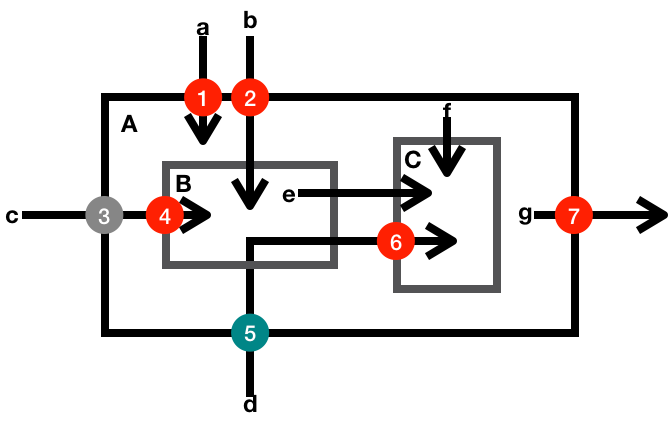

- 00 开篇词 你写的每一行代码，都是你的名片.md.html
- 01 从条件运算符说起，反思什么是好代码.md.html
- 02 把错误关在笼子里的五道关卡.md.html
- 03 优秀程序员的六个关键特质.md.html
- 04 代码规范的价值：复盘苹果公司的GoToFail漏洞.md.html
- 05 经验总结：如何给你的代码起好名字？.md.html
- 06 代码整理的关键逻辑和最佳案例.md.html
- 07 写好注释，真的是小菜一碟吗？.md.html
- 08 写好声明的“八项纪律”.md.html
- 09 怎么用好Java注解？.md.html
- 10 异常处理都有哪些陷阱？.md.html
- 11 组织好代码段，让人对它“一见钟情”.md.html
- 12丨组织好代码文件，要有“用户思维”.md.html
- 13 接口规范，是协作的合约.md.html
- 14 怎么写好用户指南？.md.html
- 15 编写规范代码的检查清单.md.html
- 16丨代码“规范”篇用户答疑.md.html
- 17 为什么需要经济的代码？.md.html
- 18丨思考框架：什么样的代码才是高效的代码？.md.html
- 19 怎么避免过度设计？.md.html
- 20 简单和直观，是永恒的解决方案.md.html
- 21 怎么设计一个简单又直观的接口？.md.html
- 22丨高效率，从超越线程同步开始！.md.html
- 23 怎么减少内存使用，减轻内存管理负担？.md.html
- 24 黑白灰，理解延迟分配的两面性.md.html
- 25 使用有序的代码，调动异步的事件.md.html
- 26 有哪些招惹麻烦的性能陷阱？.md.html
- 27 怎么编写可持续发展的代码？.md.html
- 28 怎么尽量“不写”代码？.md.html
- 29 编写经济代码的检查清单.md.html
- 30丨“代码经济篇”答疑汇总.md.html
- 31 为什么安全的代码这么重要？.md.html
- 32 如何评估代码的安全缺陷？.md.html
- 33 整数的运算有哪些安全威胁？.md.html
- 34 数组和集合，可变量的安全陷阱.md.html
- 35 怎么处理敏感信息？.md.html
- 36 继承有什么安全缺陷？.md.html
- 37 边界，信任的分水岭.md.html
- 38 对象序列化的危害有多大？.md.html
- 39 怎么控制好代码的权力？.md.html
- 40 规范，代码长治久安的基础.md.html
- 41 预案，代码的主动风险管理.md.html
- 42 纵深，代码安全的深度防御.md.html
- 43 编写安全代码的最佳实践清单.md.html
- 44 “代码安全篇”答疑汇总.md.html
- Q&A加餐丨关于代码质量，你关心的那些事儿.md.html
- 结束语 如何成为一个编程好手？.md.html
- 捐赠
37 边界，信任的分水岭
边界是信息安全里一个重要的概念。如果不能清晰地界定信任的边界，并且有效地守护好这个边界，那么编写安全的代码几乎就是一项不可能完成的任务。
评审案例
计算机之间的通信，尤其是建立在非可靠连接之上的通信，如果我们能够知道对方是否处于活跃状态，会大幅度地提升通信效率。在传输层安全通信的场景下，这种检测对方活跃状态的协议，叫做心跳协议。
心跳协议的基本原理，就是发起方给对方发送一段检测数据，如果对方能原封不动地把检测数据都送回，就证明对方处于活跃状态。
下面的数据结构，定义的就是包含检测数据的通信消息。
struct {
HeartbeatMessageType type;
uint16 payload_length;
opaque payload[HeartbeatMessage.payload_length];
opaque padding[padding_length];
} HeartbeatMessage;
其中，type是一个字节，表明心跳检测的类型；payload_length使用两个字节，定义的是检测数据的长度；payload的字节数由payload_length确定，它携带的是检测数据；padding是随机的填充数据，最少16个字节。
如果愿意回应心跳请求，接收方就拷贝检测数据（payload_length和payload），并把它封装在同样的数据结构里。
下面的这段代码（函数process_heartbeat，为便于阅读，在源代码基础上有修改），就是接收方处理心跳请求的C语言代码。你能看出其中的问题吗？
int process_heartbeat(
unsigned char* request, unsigned int request_length) {
unsigned char *p = request, *pl;
unsigned short hbtype;
unsigned int payload_length;
unsigned int padding_length = 16; /* Use minimum padding */
/* Read type and payload length first */
hbtype = *p++;
payload_length = ((unsigned int)(*p++)) << 8L |
((unsigned int)(*p++));
pl = p;
// produce response heaetbeat message
unsigned char *response, *bp;
/* Allocate memory for the response, size is 1 bytes
* message type, plus 2 bytes payload length, plus
* payload, plus padding
*/
response = malloc(1 + 2 + payload_length + padding_length);
bp = response;
/* Enter response type, length and copy payload */
*bp++ = 1; /* 1: response heartbeat type */
*bp++ = (unsigned char)((payload_length >> 8L) & 0xff);
*bp++ = (unsigned char)((payload_length ) & 0xff);
memcpy(bp, pl, payload_length);
bp += payload_length;
// snipped
return 0;
}
上面这段代码，读取了请求的payload_length字段，然后按照payload_length的大小，分配了一段内存。然后，从请求数据的payload指针开始，拷贝了和payload_length一样大小的一段数据。这段数据，就是要回应给请求方的检测数据。 按照协议，这段数据应该和请求信息的检测数据一模一样。
比如说吧，如果心跳请求的数据是：
type: 0x01
payload_length: 0x00, 0x05 // 5
payload: {0x68, 0x65, 0x6c, 0x6c, 0x6f}; // 'hello'
padding: {0xCF, 0xED, ...};
按照协议和上面实现的代码，心跳请求的回应数据应该是：
type: 0x01
payload_length: 0x00, 0x05 // 5
payload: {0x68, 0x65, 0x6c, 0x6c, 0x6f}; // 'hello'
padding: {0x07, 0x91, ...};
这看起来很美好，是吧？ 可是，如果请求方心有图谋，在心跳请求数据上动了手脚，问题就来了。比如说吧，还是类似的心跳请求，但是payload_length的大小和真实的payload大小不相符合。下面的这段请求数据，检测数据还是只有5个字节，但是payload_length字段使用了一个大于5的数字。
type: 0x01
payload_length: 0x04, 0x00 // 1024
payload: {0x68, 0x65, 0x6c, 0x6c, 0x6f}; // hello
padding: {0xCF, 0xED, ...};
按照协议的本意，这不是一个合法的心跳请求。上面处理心跳请求的代码，不能识别出这是一个不合法的请求，依旧完成了心跳请求的回应。
type: 0x01
payload_length: 0x04, 0x00 // 1024
payload: {0x68, 0x65, 0x6c, 0x6c, 0x6f, // 'hello
0xCF, 0xED, ... // request padding
0x70, 0x72, 0x69, 0x76, 0x69, 0x76, 0x61, 0x74,
0x65, 0x20, 0x6b, 0x65, 0x79, 0x20,
... }; // private key "..."
padding: {0x07, 0x91, ...};
心跳请求的真实检测数据只有5个字节，返回检测数据有1024个字节，这中间有1019个字节的差距。这1019个字节从哪儿来呢？由于代码使用了memcpy()函数，这1019个字节就是从payload指针（pl）后面的内存中被读取出来的。这些内存中可能包含很多敏感信息，比如密码的私钥，用户的社会保障号等等。
这就是著名的心脏滴血漏洞（Heartbleed），这个漏洞出现在OpenSSL的代码里。2014年4月7日，OpenSSL发布了这个漏洞的修复版。由于OpenSSL的广泛使用，有大批的产品和服务需要升级到修复版，而升级需要时间。修复版刚刚发布，像猎食者一样的黑客抢在产品和服务的升级完成之前，马上就展开了攻击。赛跑立即展开！仅隔一天，2014年4月8日，加拿大税务局遭受了长达6个小时的攻击，大约有900人的社会保障号被泄漏。2014年4月14日，英国育儿网站Mumsnet有几个用户帐户被劫持，其中包括了其首席执行官的账户。2014年8月，一家世界500强医疗服务机构透露，心脏滴血漏洞公开一周后，他们的系统遭受攻击，导致四百五十万条医疗数据被泄漏。
- 【图片来自http://heartbleed.com/， https://en.wikipedia.org/wiki/Heartbleed#/media/File:Heartbleed.svg】
案例分析
没有检查和拒绝不合法的请求，是心脏滴血漏洞出现的根本原因。这个漏洞的修复也很简单，增加检查心跳请求的数据结构是否合法的代码就行了。
下面的代码就是修复后的版本。修复后的代码，加入了对心跳请求payload_length的检查。
int process_heartbeat(
unsigned char* request, unsigned int request_length) {
unsigned char *p = request, *pl;
unsigned short hbtype;
unsigned int payload_length;
unsigned int padding_length = 16; /* Use minimum padding */
/* Read type and payload length first */
if (1 + 2 + 16 > request_length) {
/* silently discard */
return 0;
}
hbtype = *p++;
payload_length = ((unsigned int)(*p++)) << 8L |
((unsigned int)(*p++));
if (1 + 2 + payload_length + 16 > request_length) {
/* silently discard */
return 0;
}
pl = p;
// produce response heaetbeat message
unsigned char *response, *bp;
/* Allocate memory for the response, size is 1 bytes
* message type, plus 2 bytes payload length, plus
* payload, plus padding
*/
response = malloc(1 + 2 + payload_length + padding_length);
bp = response;
/* Enter response type, length and copy payload */
*bp++ = 1; /* 1: response heartbeat type */
*bp++ = (unsigned char)((payload_length >> 8L) & 0xff);
*bp++ = (unsigned char)((payload_length ) & 0xff);
memcpy(bp, pl, payload_length);
bp += payload_length;
// snipped
return 0;
}
如果比较下process_heartbeat()函数修复前后的实现代码，我们就会发现修复前的危险性主要来自于两点：
没有检查外部数据的合法性（payload_length和payload）；
内存的分配和拷贝依赖于外部的未校验数据（malloc和memcpy）。
这两点都违反了一条基本的安全编码原则，我们在前面提到过这条原则，那就是：跨界的数据不可信任。
信任的边界
不知道你有没有这样的疑问：类似于memcpy()函数，如果process_heartbeat()函数的传入参数request_length的数值，大于传入参数request实际拥有的数据量，这个函数不是还有内存泄漏问题吗？
如果独立地看上面的代码，这样的问题是有可能存在的。但是，process_heartbeat()是OpenSSL的一个内部函数，它的调用代码，已经检查过request容量和request_length的匹配问题。所以，在process_heartbeat()的实现代码里，我们就不再操心这个匹配的问题了。
对一个函数来说，到底哪些传入参数应该检查，哪些传入参数不需要检查？这的确是一个让人头疼的问题。
一般来说，对于代码内部产生的数据，我们可以信任它们的合法性；而对于外部传入的数据，就不能信任它们的合法性了。外部数据，需要先检验，再使用。
区分内部数据、外部数据的依据，就是数据的最原始来源，而不是数据在代码中的位置。
比如下面的示意图，标明的就是一些典型的数据检查点。 其中小写字母代表数据，大写字母标示的方框代表函数或者方法，数字代表检查点，箭头代表数据流向。

数据a是一个外部输入数据，函数A使用数据a之前，需要校验它的合法性（检查点1）。
数据b是一个外部输入数据，函数A使用数据b之前，完全校验了它的合法性（检查点2）。函数A内部调用的函数B在使用数据b时，就不再需要检查它的合法性了。
数据c是一个外部输入数据，函数A使用数据c之前，部分校验了它的合法性（检查点3）。函数A只能使用校验了合法性的部分数据。函数A内部调用的函数B在使用数据c时，如果需要使用未被检验部分的数据，还要检查它的未被校验部分的合法性（检查点4）。
数据d是一个外部输入数据，函数A使用数据d之前，部分校验了它的合法性（检查点5）。函数A内部调用的函数B，没有使用该数据，但是把该数据传送给了函数C。函数C在使用数据d时，如果需要使用未被检验部分的数据，还要检查它的未被校验部分的合法性（检查点6）。
数据e和f是一个内部数据，函数C使用内部数据时，不需要校验它的合法性。
数据g是一个内部数据，由函数A产生，并且输出到外部。这时候，不需要检验数据g的合法性，但是需要防护输出数据的变化对内部函数A状态的影响（防护点7）。
原则上，对于外部输入数据的合法性，我们要尽早校验，尽量全面校验。但是有时候，只有把数据分解到一定程度之后，我们才有可能完成对数据的全面校验，这时候就比较容易造成数据校验遗漏。
我们上面讨论过的心脏滴血漏洞，就有点像数据d的用例，调用关系多了几层，数据校验的遗漏就难以察觉了。
哪些是外部数据？
你是不是还有一个疑问：为什数据e和f对函数C来说，就不算是外部数据了？它们明明是函数C的外部输入数据呀！
当我们说跨界的数据时，这些数据指的是一个系统边界外部产生的数据。如果我们把函数A、函数B和函数C看成一个系统，那么数据e和数据f就是这个系统边界内部产生的数据。内部产生的数据，一般是合法的，要不然就存在代码的逻辑错误；内部产生的数据，一般也是安全的，不会故意嵌入攻击性逻辑。所以，为了编码和运行的效率，我们一般会选择信任内部产生的数据。
一般的编码环境下，我们需要考量四类外部数据：
用户输入数据（配置信息、命令行输入，用户界面输入等）；
I/O输入数据（TCP/UDP连接，文件I/O）；
公开接口输入数据；
公开接口输出数据。
我想，前三类外部数据都容易理解。第四类公开接口输出数据，不是内部数据吗？怎么变成需要考量的外部数据了？我们在前面的章节讨论过这个问题。
公开接口的输出数据，其实是把内部数据外部化了。如果输出数据是共享的可变量（比如没有深拷贝的集合和数组），那么外部的代码就可以通过修改输出数据，进而影响原接口的行为。这也算是一种意料之外的“输入”。
需要注意的是，公开接口的规范，要标明可变量的处理方式。要不然，调用者就不清楚可不可以修改可变量。
让调用者猜测公开接口的行为，会埋下兼容性的祸根。
比如下面的例子，就是两个Java核心类库的公开方法。这两个方法，对于传入、传出的可变量（数组）都做了拷贝，并且在接口规范里声明了变量拷贝。
package javax.net.ssl;
// snipped
public class SSLParameters {
private String[] applicationProtocols = new String[0];
// snipped
/**
* Returns a prioritized array of application-layer protocol names
* that can be negotiated over the SSL/TLS/DTLS protocols.
* <snipped>
* This method will return a new array each time it is invoked.
*
* @return a non-null, possibly zero-length array of application
* protocol {@code String}s. The array is ordered based
* on protocol preference, with {@code protocols[0]}
* being the most preferred.
* @see #setApplicationProtocols
* @since 9
*/
public String[] getApplicationProtocols() {
return applicationProtocols.clone();
}
/**
* Sets the prioritized array of application-layer protocol names
* that can be negotiated over the SSL/TLS/DTLS protocols.
* <snipped>
* @implSpec
* This method will make a copy of the {@code protocols} array.
* <snipped>
* @see #getApplicationProtocols
* @since 9
*/
public void setApplicationProtocols(String[] protocols) {
if (protocols == null) {
throw new IllegalArgumentException("protocols was null");
}
String[] tempProtocols = protocols.clone();
for (String p : tempProtocols) {
if (p == null || p.isEmpty()) {
throw new IllegalArgumentException(
"An element of protocols was null/empty");
}
}
applicationProtocols = tempProtocols;
}
}
从上面的例子中，我们也可以体会到，公开接口的编码要比内部接口的编码复杂得多。因为我们无法预料接口的使用者会怎么创造性地使用这些接口。公开接口的实现一般要慎重地考虑安全防护措施，这让公开接口的设计、规范和实现都变得很复杂。从这个意义上来说，我们也需要遵守在第二部分“经济的代码”里谈到的原则：接口要简单直观。
小结
通过对这个案例的讨论，我想和你分享下面两点个人看法。
外部输入数据，需要检查数据的合法性；
公开接口的输入和输出数据，还要考虑可变量的传递带来的危害。
一起来动手
外部数据的合法性问题，是信息安全里的一大类问题，也是安全攻击者经常利用的一类安全漏洞。
区分内部数据、外部数据的依据，是数据的最原始来源，而不是数据在代码中的位置。这一点让外部数据的识别变得有点艰难，特别是代码层数比较多的时候，我们可能没有办法识别一个传入参数，到底是内部数据还是外部数据。在这种情况下，我们需要采取比较保守的姿态，无法识别来源的数据，不应该是可信任的数据。
这一次的练习题，我们按照保守的姿态，来分析下面这段代码中的数据可信任性问题。
import java.util.HashMap;
import java.util.Map;
public class Solution {
/**
* Given an array of integers, return indices of the two numbers
* such that they add up to a specific target.
*/
public int[] twoSum(int[] nums, int target) {
Map<Integer, Integer> map = new HashMap<>();
for (int i = 0; i < nums.length; i++) {
int complement = target - nums[i];
if (map.containsKey(complement)) {
return new int[] { map.get(complement), i };
}
map.put(nums[i], i);
}
throw new IllegalArgumentException("No two sum solution");
}
}
欢迎你把你的看法写在留言区，我们一起来学习、思考、精进！
如果你觉得这篇文章有所帮助，欢迎点击“请朋友读”，把它分享给你的朋友或者同事。
© 2019 - 2023 Liangliang Lee. Powered by gin and hexo-theme-book.